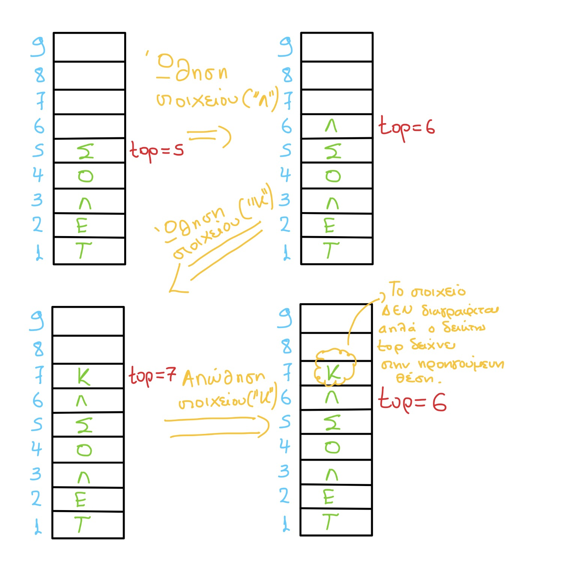

Στοίβα (stack), ονομάζεται μια δομή δεδομένων το σύνολο των στοιχείων της οποίας είναι διατεταγμένο με τέτοιο τρόπο, ώστε τα στοιχεία που βρίσκονται στην κορυφή της στοίβας λαμβάνονται πρώτα, ενώ αυτά που βρίσκονται στο βάθος της στοίβας λαμβάνονται τελευταία. Η παραπάνω μέθοδος ονομάζεται Τελευταίο Μέσα, Πρώτο Έξω ή LIFO (=Last In First Out).
Στην παρακάτω εικόνα παρατηρούμε τις διαδικασίες της ώθησης & απώθησης σε μια στοίβα 9 θέσεων με χαρακτήρες.
 Σημείωση: Στην απώθηση δεν διαγράφεται το στοιχείο, στην πραγματικότητα δεν γίνεται καμία παρέμβαση στα περιεχόμενα του πίνακα. Απλώς ο δείκτης top δείχνει στην προηγούμενη θέση.Το παρακάτω τμήμα προγράμματος πραγματοποιεί ώθηση στοιχείου στην κορυφή της στοίβας με χρήση μονοδιάστατου πίνακα Α, 10 θέσεων.
ΓΡΑΨΕ "Δώσε στοιχείο για εισαγωγή στη στοίβα"
ΔΙΑΒΑΣΕ στοιχείο
ΑΝ top<10 ΤΟΤΕ
top <- top+1
A[top] <- στοιχείο
ΑΛΛΙΩΣ
ΓΡΑΨΕ "Υπερχείλιση στοίβας"
ΤΕΛΟΣ_ΑΝ
Το παρακάτω τμήμα προγράμματος πραγματοποιεί απώθηση στοιχείου από στοίβα με χρήση μονοδιάστατου πίνακα Α, 10 θέσεων.
ΑΝ top>=1 ΤΟΤΕ
ΓΡΑΨΕ Α[top]
top <- top-1
ΑΛΛΙΩΣ
ΓΡΑΨΕ "Υποχείλιση στοίβας"
ΤΕΛΟΣ_ΑΝ